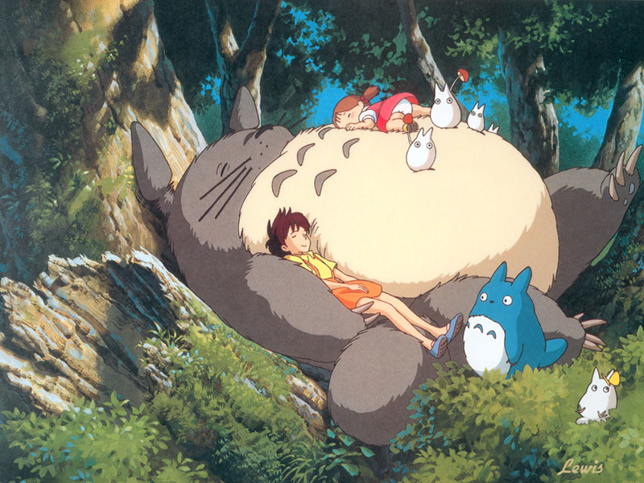
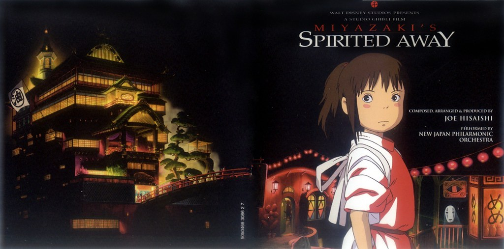
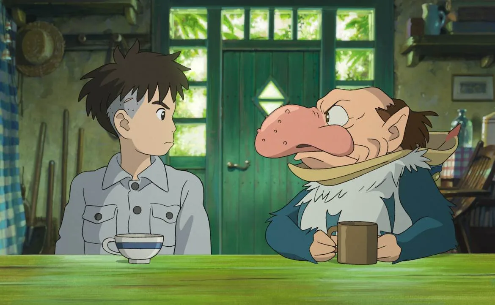

宮崎駿是日本動畫師、動畫導演、及漫畫家。畢業於杉並區立永福小學校、杉並區立大宮中學校、東京都立豐多摩高等學校及學習院大學政治經濟學院。大學畢業後踏入動畫製作工作，日後成為日本知名動畫廠吉卜力工作室的核心人物之一。其執導過11部長篇動畫電影，多次宣布退休，2013年9月時是第7次宣布退休，2016年再度復出。 崎駿喺東京都文京區出世，細個就鍾意畫漫畫同發白日夢。曾經讀過杉並區立永福小學校、杉並區立大宮中學校、東京都立豐多摩高等學校。喺學習院大學政治同經濟部畢業之後，就參加咗東映動畫。1965年10月同佢老婆太田朱美結婚，生咗兩個仔。大仔叫宮崎吾朗，喺1967年[月出世，而家係一個動畫導演。細仔叫宮崎敬介，喺1969年4月出世，係木版畫家。 響1963年到1971年，宮崎駿曾經喺東映動畫公司做。1984年4月，佢同佢老婆創立個「雙人」個人事務所。2001年10月1號，三鷹之森知步里美術館正式開張，代表住佢思想藝術嘅夢想國。2003年4月10號美國《時代雜誌》發表「亞洲英雄二十人」，有兩個日本人上咗榜，佢係其中之一。1999年佢話將會減少製作，謠言就話佢個意思係退休。不過2001年出咗《千與千尋》之後，冇乜人再謠言佢退咗休，而佢而家開始攪改編劇多。佢最近嘅作品係《哈爾移動城堡》。宮崎駿嘅動畫新作「崖上的波兒」，2008年夏天喺日本上畫。 2013年9月，宮崎駿退出長篇動畫製作
《龍貓》是一部由吉卜力工作室與德間書店製作，宮崎駿執導，於1988年4月16日首映的日本奇幻動畫電影。
《天空之城》是一部由吉卜力工作室製作、宮崎駿執導，於1986年8月2日首映的日本動畫電影，作品的原作、導演、劇本和角色設定皆由宮崎駿擔任。此作也是吉卜力工作室首次公開的劇院作品，由東映發行。
《神隱少女》 是一部由吉卜力工作室製作、宮崎駿擔任導演和劇本，於2001年7月20日上映的日本動畫電影。
《蒼鷺與少年》是一部2023年上映的日本動畫電影，由宮崎駿執導兼編劇，吉卜力工作室製作。電影原文片名是引用自小說家吉野源三郎在1937年發表的著書《你想活出怎樣的人生》，內容則為宮崎駿原創。劇情講述少年牧眞人在母親因火災喪生後與一隻會說話的蒼鷺相遇，展開不可思議的探索旅程。
